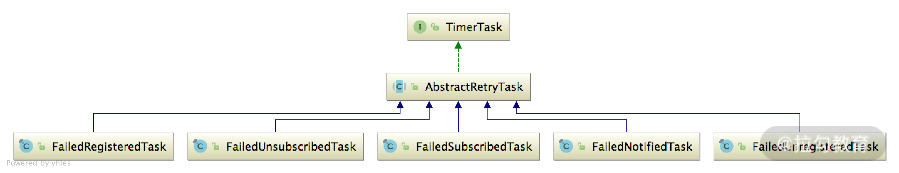

- 00 开篇词 深入掌握 Dubbo 原理与实现，提升你的职场竞争力.md.html
- 01 Dubbo 源码环境搭建：千里之行，始于足下.md.html
- 02 Dubbo 的配置总线：抓住 URL，就理解了半个 Dubbo.md.html
- 03 Dubbo SPI 精析，接口实现两极反转（上）.md.html
- 04 Dubbo SPI 精析，接口实现两极反转（下）.md.html
- 05 海量定时任务，一个时间轮搞定.md.html
- 06 ZooKeeper 与 Curator，求你别用 ZkClient 了（上）.md.html
- 07 ZooKeeper 与 Curator，求你别用 ZkClient 了（下）.md.html
- 08 代理模式与常见实现.md.html
- 09 Netty 入门，用它做网络编程都说好（上）.md.html
- 10 Netty 入门，用它做网络编程都说好（下）.md.html
- 11 简易版 RPC 框架实现（上）.md.html
- 12 简易版 RPC 框架实现（下）.md.html
- 13 本地缓存：降低 ZooKeeper 压力的一个常用手段.md.html
- 14 重试机制是网络操作的基本保证.md.html
- 15 ZooKeeper 注册中心实现，官方推荐注册中心实践.md.html
- 16 Dubbo Serialize 层：多种序列化算法，总有一款适合你.md.html
- 17 Dubbo Remoting 层核心接口分析：这居然是一套兼容所有 NIO 框架的设计？.md.html
- 18 Buffer 缓冲区：我们不生产数据，我们只是数据的搬运工.md.html
- 19 Transporter 层核心实现：编解码与线程模型一文打尽（上）.md.html
- 20 Transporter 层核心实现：编解码与线程模型一文打尽（下）.md.html
- 21 Exchange 层剖析：彻底搞懂 Request-Response 模型（上）.md.html
- 22 Exchange 层剖析：彻底搞懂 Request-Response 模型（下）.md.html
- 23 核心接口介绍，RPC 层骨架梳理.md.html
- 24 从 Protocol 起手，看服务暴露和服务引用的全流程（上）.md.html
- 25 从 Protocol 起手，看服务暴露和服务引用的全流程（下）.md.html
- 26 加餐：直击 Dubbo “心脏”，带你一起探秘 Invoker（上）.md.html
- 27 加餐：直击 Dubbo “心脏”，带你一起探秘 Invoker（下）.md.html
- 28 复杂问题简单化，代理帮你隐藏了多少底层细节？.md.html
- 29 加餐：HTTP 协议 + JSON-RPC，Dubbo 跨语言就是如此简单.md.html
- 30 Filter 接口，扩展 Dubbo 框架的常用手段指北.md.html
- 31 加餐：深潜 Directory 实现，探秘服务目录玄机.md.html
- 32 路由机制：请求到底怎么走，它说了算（上）.md.html
- 33 路由机制：请求到底怎么走，它说了算（下）.md.html
- 34 加餐：初探 Dubbo 动态配置的那些事儿.md.html
- 35 负载均衡：公平公正物尽其用的负载均衡策略，这里都有（上）.md.html
- 36 负载均衡：公平公正物尽其用的负载均衡策略，这里都有（下）.md.html
- 37 集群容错：一个好汉三个帮（上）.md.html
- 38 集群容错：一个好汉三个帮（下）.md.html
- 39 加餐：多个返回值不用怕，Merger 合并器来帮忙.md.html
- 40 加餐：模拟远程调用，Mock 机制帮你搞定.md.html
- 41 加餐：一键通关服务发布全流程.md.html
- 42 加餐：服务引用流程全解析.md.html
- 43 服务自省设计方案：新版本新方案.md.html
- 44 元数据方案深度剖析，如何避免注册中心数据量膨胀？.md.html
- 45 加餐：深入服务自省方案中的服务发布订阅（上）.md.html
- 46 加餐：深入服务自省方案中的服务发布订阅（下）.md.html
- 47 配置中心设计与实现：集中化配置 and 本地化配置，我都要（上）.md.html
- 48 配置中心设计与实现：集中化配置 and 本地化配置，我都要（下）.md.html
- 49 结束语 认真学习，缩小差距.md.html
14 重试机制是网络操作的基本保证
在真实的微服务系统中， ZooKeeper、etcd 等服务发现组件一般会独立部署成一个集群，业务服务通过网络连接这些服务发现节点，完成注册和订阅操作。但即使是机房内部的稳定网络，也无法保证两个节点之间的请求一定成功，因此 Dubbo 这类 RPC 框架在稳定性和容错性方面，就受到了比较大的挑战。为了保证服务的可靠性，重试机制就变得必不可少了。
所谓的 “重试机制”就是在请求失败时，客户端重新发起一个一模一样的请求，尝试调用相同或不同的服务端，完成相应的业务操作。能够使用重试机制的业务接口得是“幂等”的，也就是无论请求发送多少次，得到的结果都是一样的，例如查询操作。
核心设计
在上一课时中，我们介绍了 AbstractRegistry 中的 register()/unregister()、subscribe()/unsubscribe() 以及 notify() 等核心操作，详细分析了通过本地缓存实现的容错功能。其实，这几个核心方法同样也是重试机制的关注点。
dubbo-registry 将重试机制的相关实现放到了 AbstractRegistry 的子类—— FailbackRegistry 中。如下图所示，接入 ZooKeeper、etcd 等开源服务发现组件的 Registry 实现，都继承了 FailbackRegistry，也就都拥有了失败重试的能力。

FailbackRegistry 设计核心是：覆盖了 AbstractRegistry 中 register()/unregister()、subscribe()/unsubscribe() 以及 notify() 这五个核心方法，结合前面介绍的时间轮，实现失败重试的能力；真正与服务发现组件的交互能力则是放到了 doRegister()/doUnregister()、doSubscribe()/doUnsubscribe() 以及 doNotify() 这五个抽象方法中，由具体子类实现。这是典型的模板方法模式的应用。
核心字段介绍
分析一个实现类的第一步就是了解其核心字段，那 FailbackRegistry 的核心字段有哪些呢？
- retryTimer（HashedWheelTimer 类型）：用于定时执行失败重试操作的时间轮。
- retryPeriod（int 类型）：重试操作的时间间隔。
- failedRegistered（ConcurrentMap<URL, FailedRegisteredTask>类型）：注册失败的 URL 集合，其中 Key 是注册失败的 URL，Value 是对应的重试任务。
- failedUnregistered（ConcurrentMap<URL, FailedUnregisteredTask>类型）：取消注册失败的 URL 集合，其中 Key 是取消注册失败的 URL，Value 是对应的重试任务。
- failedSubscribed（ConcurrentMap<Holder, FailedSubscribedTask>类型）：订阅失败 URL 集合，其中 Key 是订阅失败的 URL + Listener 集合，Value 是相应的重试任务。
- failedUnsubscribed（ConcurrentMap<URL, Set>类型）：取消订阅失败的 URL 集合，其中 Key 是取消订阅失败的 URL + Listener 集合，Value 是相应的重试任务。
- failedNotified（ConcurrentMap<Holder, FailedNotifiedTask>类型）：通知失败的 URL 集合，其中 Key 是通知失败的 URL + Listener 集合，Value 是相应的重试任务。
在 FailbackRegistry 的构造方法中，首先会调用父类 AbstractRegistry 的构造方法完成本地缓存相关的初始化操作，然后从传入的 URL 参数中获取重试操作的时间间隔（即retry.period 参数）来初始化 retryPeriod 字段，最后初始化 retryTimer****时间轮。整个代码比较简单，这里就不展示了。
核心方法实现分析
FailbackRegistry 对 register()/unregister() 方法和 subscribe()/unsubscribe() 方法的具体实现非常类似，所以这里我们就只介绍其中register() 方法的具体实现流程。
- 根据 registryUrl 中 accepts 参数指定的匹配模式，决定是否接受当前要注册的 Provider URL。
- 调用父类 AbstractRegistry 的 register() 方法，将 Provider URL 写入 registered 集合中。
- 调用 removeFailedRegistered() 方法和 removeFailedUnregistered() 方法，将该 Provider URL 从 failedRegistered 集合和 failedUnregistered 集合中删除，并停止相关的重试任务。
- 调用 doRegister() 方法，与服务发现组件进行交互。该方法由子类实现，每个子类只负责接入一个特定的服务发现组件。
- 在 doRegister() 方法出现异常的时候，会根据 URL 参数以及异常的类型，进行分类处理：待注册 URL 的 check 参数为 true（默认值为 true）；待注册的 URL 不是 consumer 协议；registryUrl 的 check 参数也为 true（默认值为 true）。若满足这三个条件或者抛出的异常为 SkipFailbackWrapperException，则直接抛出异常。否则，就会创建重试任务并添加到 failedRegistered 集合中。
明确 register() 方法的核心流程之后，我们再来看 register() 方法的具体代码实现：
public void register(URL url) {
if (!acceptable(url)) {
logger.info("..."); // 打印相关的提示日志
return;
}
super.register(url); // 完成本地文件缓存的初始化
// 清理failedRegistered集合和failedUnregistered集合，并取消相关任务
removeFailedRegistered(url);
removeFailedUnregistered(url);
try {
doRegister(url); // 与服务发现组件进行交互，具体由子类实现
} catch (Exception e) {
Throwable t = e;
// 检测check参数，决定是否直接抛出异常
boolean check = getUrl().getParameter(Constants.CHECK_KEY,
true) && url.getParameter(Constants.CHECK_KEY, true)
&& !CONSUMER_PROTOCOL.equals(url.getProtocol());
boolean skipFailback = t instanceof
SkipFailbackWrapperException;
if (check || skipFailback) {
if (skipFailback) {
t = t.getCause();
}
throw new IllegalStateException("Failed to register");
}
// 如果不抛出异常，则创建失败重试的任务，并添加到failedRegistered集合中
addFailedRegistered(url);
}
}
从以上代码可以看出，当 Provider 向 Registry 注册 URL 的时候，如果注册失败，且未设置 check 属性，则创建一个定时任务，添加到时间轮中。
下面我们再来看看创建并添加这个重试任务的相关方法——addFailedRegistered() 方法，具体实现如下：
private void addFailedRegistered(URL url) {
FailedRegisteredTask oldOne = failedRegistered.get(url);
if (oldOne != null) { // 已经存在重试任务，则无须创建，直接返回
return;
}
FailedRegisteredTask newTask = new FailedRegisteredTask(url,
this);
oldOne = failedRegistered.putIfAbsent(url, newTask);
if (oldOne == null) {
// 如果是新建的重试任务，则提交到时间轮中，等待retryPeriod毫秒后执行
retryTimer.newTimeout(newTask, retryPeriod,
TimeUnit.MILLISECONDS);
}
}
重试任务
FailbackRegistry.addFailedRegistered() 方法中创建的 FailedRegisteredTask 任务以及其他的重试任务，都继承了 AbstractRetryTask 抽象类，如下图所示：

在 AbstractRetryTask 中维护了当前任务关联的 URL、当前重试的次数等信息，在其 run() 方法中，会根据重试 URL 中指定的重试次数（retry.times 参数，默认值为 3）、任务是否被取消以及时间轮的状态，决定此次任务的 doRetry() 方法是否正常执行。
public void run(Timeout timeout) throws Exception {
if (timeout.isCancelled() || timeout.timer().isStop() || isCancel()) { // 检测定时任务状态和时间轮状态
return;
}
if (times > retryTimes) { // 检查重试次数
logger.warn("...");
return;
}
try {
doRetry(url, registry, timeout); // 执行重试
} catch (Throwable t) {
reput(timeout, retryPeriod); // 重新添加定时任务，等待重试
}
}
如果任务的 doRetry() 方法执行出现异常，AbstractRetryTask 会通过 reput() 方法将当前任务重新放入时间轮中，并递增当前任务的执行次数。
protected void reput(Timeout timeout, long tick) {
if (timeout == null) { // 边界检查
throw new IllegalArgumentException();
}
Timer timer = timeout.timer(); // 检查定时任务
if (timer.isStop() || timeout.isCancelled() || isCancel()) {
return;
}
times++; // 递增times
// 添加定时任务
timer.newTimeout(timeout.task(), tick, TimeUnit.MILLISECONDS);
}
AbstractRetryTask 将 doRetry() 方法作为抽象方法，留给子类实现具体的重试逻辑，这也是模板方法的使用。
在子类 FailedRegisteredTask 的 doRetry() 方法实现中，会再次执行关联 Registry 的 doRegister() 方法，完成与服务发现组件交互。如果注册成功，则会调用 removeFailedRegisteredTask() 方法将当前关联的 URL 以及当前重试任务从 failedRegistered 集合中删除。如果注册失败，则会抛出异常，执行上文介绍的 reput ()方法重试。
protected void doRetry(URL url, FailbackRegistry registry, Timeout timeout) {
registry.doRegister(url); // 重新注册
registry.removeFailedRegisteredTask(url); // 删除重试任务
}
public void removeFailedRegisteredTask(URL url) {
failedRegistered.remove(url);
}
另外，在 register() 方法入口处，会主动调用 removeFailedRegistered() 方法和 removeFailedUnregistered() 方法来清理指定 URL 关联的定时任务：
public void register(URL url) {
super.register(url);
removeFailedRegistered(url); // 清理FailedRegisteredTask定时任务
removeFailedUnregistered(url); // 清理FailedUnregisteredTask定时任务
try {
doRegister(url);
} catch (Exception e) {
addFailedRegistered(url);
}
}
其他核心方法
unregister() 方法以及 unsubscribe() 方法的实现方式与 register() 方法类似，只是调用的 do*() 抽象方法、依赖的 AbstractRetryTask 有所不同而已，这里就不再展开细讲。
你还记得上一课时我们介绍的 AbstractRegistry 通过本地文件缓存实现的容错机制吗？FailbackRegistry.subscribe() 方法在处理异常的时候，会先获取缓存的订阅数据并调用 notify() 方法，如果没有缓存相应的订阅数据，才会检查 check 参数决定是否抛出异常。
通过上一课时对 AbstractRegistry.notify() 方法的介绍，我们知道其核心逻辑之一就是回调 NotifyListener。下面我们就来看一下 FailbackRegistry 对 notify() 方法的覆盖：
protected void notify(URL url, NotifyListener listener,
List<URL> urls) {
... // 检查url和listener不为空(略)
try {
// FailbackRegistry.doNotify()方法实际上就是调用父类
// AbstractRegistry.notify()方法，没有其他逻辑
doNotify(url, listener, urls);
} catch (Exception t) {
// doNotify()方法出现异常，则会添加一个定时任务
addFailedNotified(url, listener, urls);
}
}
addFailedNotified() 方法会创建相应的 FailedNotifiedTask 任务，添加到 failedNotified 集合中，同时也会添加到时间轮中等待执行。如果已存在相应的 FailedNotifiedTask 重试任务，则会更新任务需要处理的 URL 集合。
在 FailedNotifiedTask 中维护了一个 URL 集合，用来记录当前任务一次运行需要通知的 URL，每执行完一次任务，就会清空该集合，具体实现如下：
protected void doRetry(URL url, FailbackRegistry registry,
Timeout timeout) {
// 如果urls集合为空，则会通知所有Listener，该任务也就啥都不做了
if (CollectionUtils.isNotEmpty(urls)) {
listener.notify(urls);
urls.clear();
}
reput(timeout, retryPeriod); // 将任务重新添加到时间轮中等待执行
}
从上面的代码可以看出，FailedNotifiedTask 重试任务一旦被添加，就会一直运行下去，但真的是这样吗？在 FailbackRegistry 的 subscribe()、unsubscribe() 方法中，可以看到 removeFailedNotified() 方法的调用，这里就是清理 FailedNotifiedTask 任务的地方。我们以 FailbackRegistry.subscribe() 方法为例进行介绍：
public void subscribe(URL url, NotifyListener listener) {
super.subscribe(url, listener);
removeFailedSubscribed(url, listener); // 关注这个方法
try {
doSubscribe(url, listener);
} catch (Exception e) {
addFailedSubscribed(url, listener);
}
}
// removeFailedSubscribed()方法中会清理FailedSubscribedTask、FailedUnsubscribedTask、FailedNotifiedTask三类定时任务
private void removeFailedSubscribed(URL url, NotifyListener listener) {
Holder h = new Holder(url, listener); // 清理FailedSubscribedTask
FailedSubscribedTask f = failedSubscribed.remove(h);
if (f != null) {
f.cancel();
}
removeFailedUnsubscribed(url, listener);// 清理FailedUnsubscribedTask
removeFailedNotified(url, listener); // 清理FailedNotifiedTask
}
介绍完 FailbackRegistry 中最核心的注册/订阅实现之后，我们再来关注其实现的恢复功能，也就是 recover() 方法。该方法会直接通过 FailedRegisteredTask 任务处理 registered 集合中的全部 URL，通过 FailedSubscribedTask 任务处理 subscribed 集合中的 URL 以及关联的 NotifyListener。
FailbackRegistry 在生命周期结束时，会调用自身的 destroy() 方法，其中除了调用父类的 destroy() 方法之外，还会调用时间轮（即 retryTimer 字段）的 stop() 方法，释放时间轮相关的资源。
总结
本课时重点介绍了 AbstractRegistry 的实现类——FailbackRegistry 的核心实现，它主要是在 AbstractRegistry 的基础上，提供了重试机制。具体方法就是通过之前课时介绍的时间轮，在 register()/ unregister()、subscribe()/ unsubscribe() 等核心方法失败时，添加重试定时任务，实现重试机制，同时也添加了相应的定时任务清理逻辑。